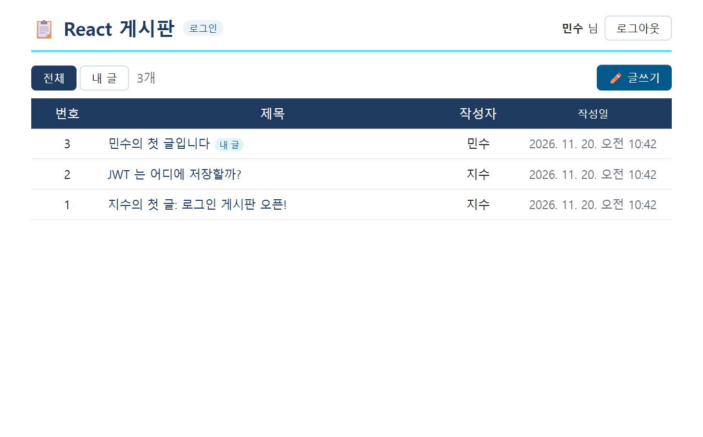
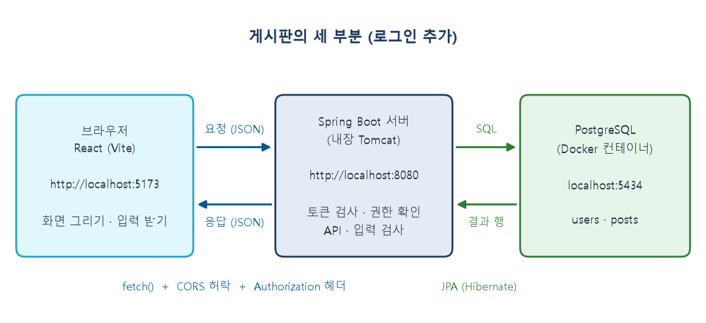

0장. 과정 안내
이 과정에서 만드는 것
1단계 기초 과정에서 Spring Boot + PostgreSQL 게시판을 만들었다. 이 심화 과정에서는 같은 게시판을 이어서 키운다.
- React Router 로 화면마다 진짜 주소(
/posts/3)를 붙인다. - Context · 커스텀 훅 · API 모듈로 코드를 정리한다.
- 회원가입 · 로그인(JWT) 을 붙이고, 내가 쓴 글만 수정·삭제할 수 있게 한다.


처음부터 새로 만들지 않는다. 기초 과정의 게시판을 고쳐 나가며 "왜 이 기능이 필요한지" 를 직접 느끼는 것이 이 과정의 목표다. 기초 과정을 마치지 않았다면 저장소의
basic/board완성본을 먼저 실행해 보자.
진행 순서 (40시간)
| 일차 | 장 | 내용 | 시간 |
|---|---|---|---|
| 1일 | 0장 | 과정 안내, 저장소 준비 | 0.5 |
| 1장 | 기초 복습 - 다시 그리기와 컴포넌트 설계 | 2.5 | |
| 2장 | useRef 와 useReducer | 5 | |
| 2일 | 3장 | 커스텀 훅 | 3 |
| 4장 | React Router | 5 | |
| 3일 | 5장 | Context API | 3 |
| 6장 | 인증의 이해 - 해시, JWT, 401 과 403 | 2.5 | |
| 7장 (1) | 프로젝트 ① 게시판을 Router 로 바꾸기 | 2.5 | |
| 4일 | 7장 (2) | 프로젝트 ① API 모듈과 useApi 훅 | 2 |
| 8장 | 프로젝트 ② Spring Boot 회원가입·로그인 API | 6 | |
| 5일 | 9장 | 프로젝트 ③ React 로그인 연동 | 6 |
| 정리 | 도전 과제, 복습 | 2 |
장마다 개념 → 따라 치기 → 실행 결과 확인 → 확인 문제 순서이고, 확인 문제 풀이는 부록 C 에 있다.
0-1. 준비
기초 과정과 같은 프로그램(Node.js, VS Code, IntelliJ IDEA, JDK 21, Git, Docker Desktop)을 쓴다. 저장소를 최신으로 받는다.
[PS] 처음 받는다면
cd C:\study
git clone https://github.com/sinaboro/react-spring-postgresql.git # 기초 과정을 안 했다면 저장소 받기
[PS] 이미 받았다면
cd C:\study\react-spring-postgresql
git pull # GitHub 의 최신 교안·예제를 받아 내 폴더에 합친다 (내가 고친 파일이 있으면 충돌할 수 있다 → 부록 A)
심화 과정에서 쓰는 폴더는 advanced 다.
react-spring-postgresql
├─ basic ← 1단계 기초 과정
└─ advanced ← 2단계 심화 과정 (이 교안)
├─ examples ← 1·2·3·5장 예제 완성본 (메뉴에서 골라 보기)
├─ router-demo ← 4장 React Router 연습 프로젝트
├─ concepts ← 6장 해시·JWT 실습 (AuthDemo.java, IntelliJ 로 열기)
├─ board-router ← 7장 완성본: 기초 게시판 + Router + API 모듈
│ └─ frontend (백엔드는 기초 과정 basic/board/backend 를 그대로 쓴다)
└─ board ← 8·9장 완성본: 로그인 게시판
├─ docker-compose.yml (PostgreSQL, 포트 5434)
├─ backend (Spring Boot + Spring Security + JWT, IntelliJ 로 열기)
└─ frontend (React + Router + AuthContext)
단계별 완성본이 따로 있는 이유: 중간에 막히거나 수업에 빠져도, 다음 장의 시작 상태를 저장소에서 바로 꺼내 이어 갈 수 있다. 예를 들어 8장을 시작할 때 7장이 끝나지 않았다면
board-router를 복사해서 시작하면 된다.
[PS] 예제 앱 실행
cd C:\study\react-spring-postgresql\advanced\examples # 심화 예제 모음 앱
npm install # package.json 에 적힌 라이브러리(React 등)를 node_modules 폴더로 받는다. 폴더마다 처음 한 번만 (1~2분)
npm run dev # 터미널에 나온 주소(보통 http://localhost:5173)로 연다
0-2. 이 과정에서 새로 쓰는 것
| 이름 | 종류 | 쓰는 장 |
|---|---|---|
useRef, useReducer, useContext, useCallback |
React Hook | 2·3·5장 |
react-router (8.x) |
React 주소·화면 연결 라이브러리 | 4·7·9장 |
localStorage |
브라우저 저장소 | 3·9장 |
spring-boot-starter-security |
Spring Security (로그인 확인, 주소별 접근 규칙, BCrypt) | 6·8장 |
jjwt (0.13) |
Java JWT(로그인 토큰) 라이브러리 | 6·8장 |